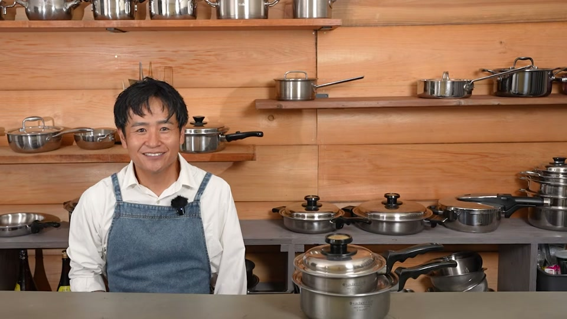
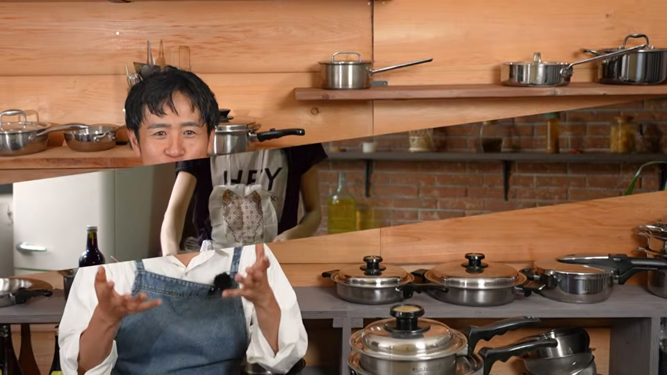
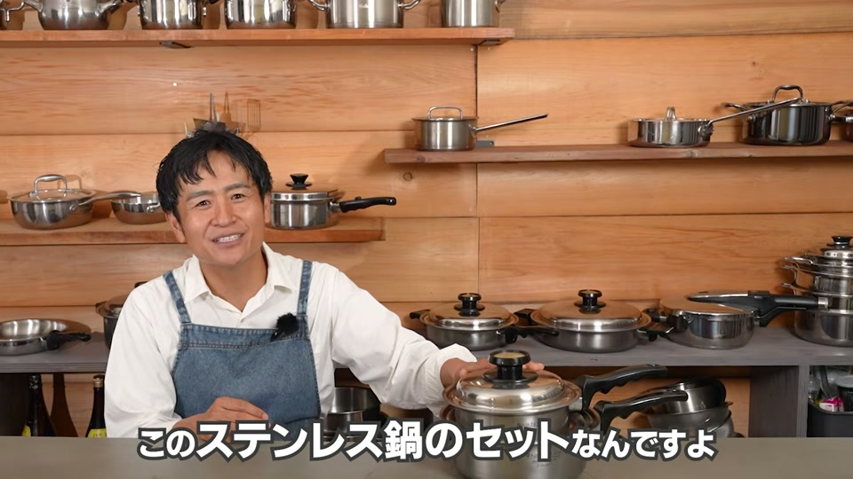
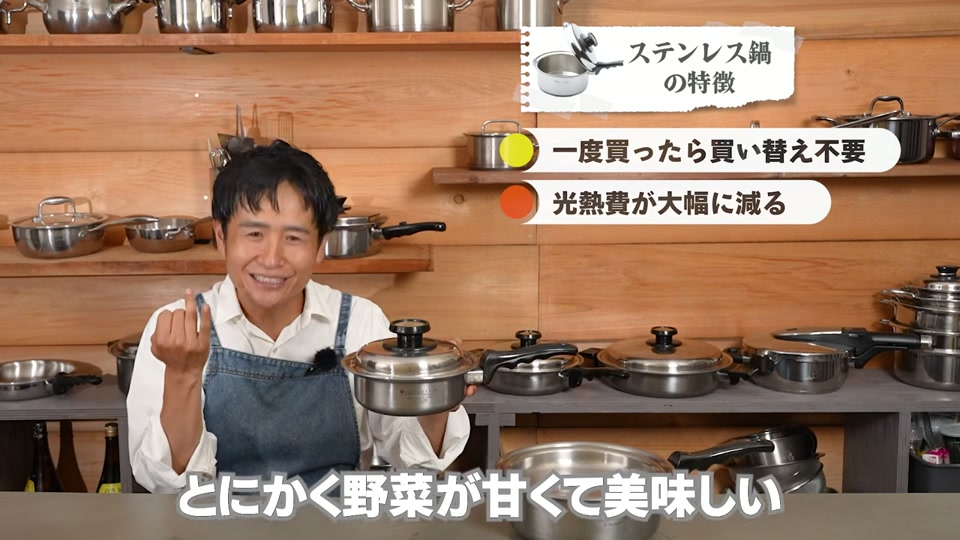
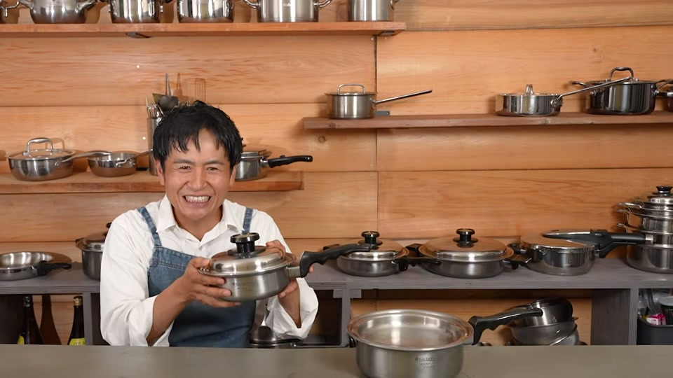
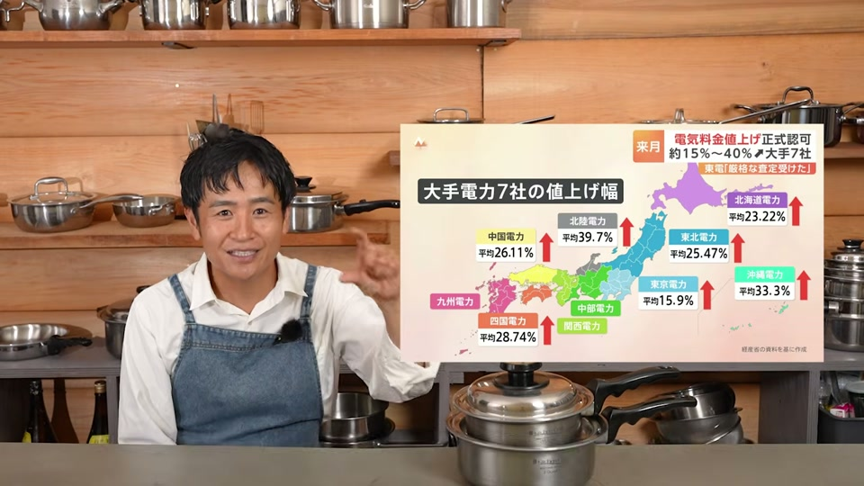
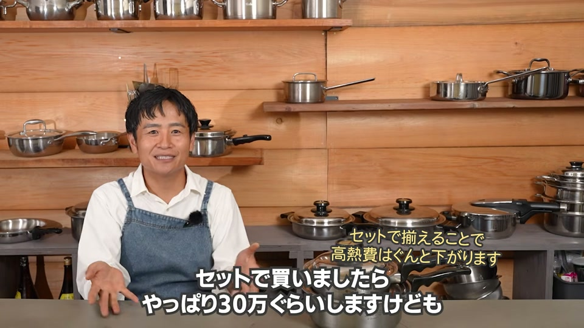

物価高や光熱費の高騰が続く中、「家計を少しでも楽にしたい」「でも毎日の料理は面倒」と感じていませんか？
結論から言うと、家計の節約と家族の健康を同時に叶える最高の解決策は「外食を減らして自炊を増やすこと」であり、それを無理なく実現するための最強の相棒が「全面多層ステンレス鍋」です。
高額に思える全面多層ステンレス鍋ですが、光熱費の削減と一生モノの耐久性、そして外食費のカットを合わせれば、実は4〜5年で十分に初期投資の元が取れる非常にコスパの高いアイテムです。本記事では、なぜステンレス鍋が自炊生活と家計改善に欠かせないのか、その理由を分かりやすく解説します。
物価高・消費税時代に自炊を選ぶべき2つの理由

1. 「なんとなく外食」をやめるだけで家計が劇的に楽になる
食品の消費税や税制をめぐる議論の中でも、外食（税率10%）と自炊（持ち帰り・食品）のコスト差は大きく開いています。何より、外食や出来合いのお惣菜は人件費や店舗の維持費が上乗せされているため、頻繁に利用すると食費を大きく圧迫します。
「疲れたから外食にする」という習慣を少し見直し、家で食べる回数を増やすだけでも、毎月数万円単位の節約に直結します。
2. 食費節約だけでなく「健康を貯金」できる
外食や加工食品は、味付けを濃くして満足感を出すために、塩分・糖分・油分が多く含まれがちです。また、保存性を高めるための添加物も気になるところです。
自炊を増やせば、シンプルな調味料を使って素材本来の味を活かした料理が作れます。不要な油や添加物を無理なくカットできるため、日々の食事を通して「将来の健康維持」という大きな資産を作ることができます。
料理の負担を減らし、自炊が続く「全面多層ステンレス鍋」の強み

自炊が良いと分かっていても、「調理や後片付けが大変で長続きしない」という人も多いでしょう。そこで活躍するのが全面多層ステンレス鍋です。
| 特徴 | 得られるメリット |
|---|---|
| 優れた熱伝導・蓄熱性 | 少量の水・油・調味料で食材の旨みを引き出せる |
| 密閉性と温調効果 | フタをして弱火で置くだけの「ほったらかし調理」が可能 |
| 高い耐久性 | 劣化しにくく、数十年以上にわたって買い替え不要 |
少ない水・油・調味料で素材の旨みを最大限に引き出す
全面多層ステンレス鍋は、鍋全体に効率よく熱が伝わる構造をしています。そのため、以下のような調理が簡単に行えます。
- 無水・少水調理： トウモロコシや野菜を少量の水で茹でる（蒸す）ことで、甘みや栄養素を逃がさず美味しく仕上がります。
- 少油調理： 肉や魚自身の油を活かして油を引かずに焼いたり、少量の油でカラッと揚げ物をすることが可能です。
- 調味料の節約： 煮物なども食材自体の甘みが引き立つため、お砂糖や味付けを控えめにしても満足感のある味に仕上がります。
家事効率が爆上がりする「ほったらかし調理」
鍋に食材を入れてフタをし、弱火にかけるだけで調理が進む「ほったらかし調理」ができる点も大きな魅力です。
つきっきりで混ぜたり火加減を気にする必要がないため、火にかけている間に掃除や洗濯を済ませたり、子供の話を聞いたりといった時間が生まれます。「料理に時間を縛られない」ことが、自炊をストレスなく続けられる大きな理由になります。
【検証】高額なステンレス鍋は本当に元が取れる？費用対効果を解説

全面多層ステンレス鍋（セットで約30万円程度など）は初期費用が高額なため、購入を迷う方も少なくありません。しかし、長期的な費用対効果で見ると非常に優秀な投資です。
蓄熱性による光熱費削減（月約2,000円の節約）
ステンレス鍋は一度温まると冷めにくく、ごく弱火や余熱で調理を完了できます。これにより、毎月のガス代や電気代を月々2,000円程度削減することが可能です。年間で約2.4万円の節約になります。
買い替え不要の耐久性で4〜5年で元が取れる
一般的なフッ素樹脂（テフロン）加工のフライパンや鍋は、数年ごとに劣化して買い替える必要があります。一方、質の高いステンレス鍋は傷に強く、焦げ付いても磨けば元通りになるため、一生モノとして数十年使い続けられます。
- 光熱費の削減（年間約2.4万円）
- 外食費の削減（月数千円〜数万円）
- 鍋の買い替え費用のカット
これらを合わせれば、4〜5年程度で初期費用分は十分に回収できる計算になります。
【独自視点】ステンレス鍋を後悔なく賢く導入・使いこなす実践ポイント

全面多層ステンレス鍋は非常に優れた道具ですが、フッ素樹脂加工の鍋とは扱い勝手が異なる部分もあります。失敗せずスムーズに自炊へ取り入れるための実践的なポイントを解説します。
まず、「いきなり高額なフルセットを買おうとしないこと」が大切です。自分のライフスタイルに合うか不安な場合は、普段最も出番が多い「小ぶりの片手鍋」や「深型フライパン」を1本だけ購入し、お米を炊く、野菜を茹でる、味噌汁を作るなどの日常使いで試してみるのがおすすめです。
また、ステンレス鍋を使う際の最大のコツは「予熱（プレヒート）」と「火加減」です。鍋を中火でしっかり温め、水滴を落としたときに玉になって転がる状態になってから油や食材を入れることで、焦げ付きやくっつきを劇的に防げます。「基本は弱火〜中火で十分」という熱伝導の特性を理解して使うことが、快適なステンレス鍋ライフへの第一歩です。
よくある質問（FAQ）

Q1. ステンレス鍋は高額ですが、本当に元が取れますか？
A. はい、十分に元が取れます。毎月の光熱費削減（月約2,000円）に加え、フッ素樹脂鍋のような定期的な買い替えが不要になります。さらに自炊の習慣化による外食費削減も含めると、4〜5年で初期費用を回収できます。
Q2. 料理が苦手な人でも使いこなせますか？
A. 使いこなせます。食材を入れてフタをし、弱火で加熱する「ほったらかし調理」ができるため、複雑な火加減の調整や炒め作業が少なく、料理初心者や苦手な方にこそおすすめです。
Q3. 少量の水や油で調理できるメリットは何ですか？
A. 食材本来の栄養や旨味・甘みを逃さず美味しく調理できる点です。余分な油分や砂糖・塩分を減らせるため、自然とヘルシーで健康的な食生活になります。
動画で紹介されているアイテム・サービス

動画内で紹介されたおすすめのキッチンツールや調味料、関連サービスの一覧です。
- おすすめ鍋・ステンレス鍋関連
- おすすめの最強！ステンレス多層鍋（※備考欄に「大澤チャンネル見ました」と書くと特製プレゼントあり）
- 予算１万円のおすすめお鍋
- 予算２万円のおすすめお鍋
- ステンレス鍋の中古品サイト
- 情報発信・オリジナルグッズ
- 大澤チャンネルのインスタ
- 大澤チャンネルのオリジナル商品サイト
- 楽天おすすめグッズ一覧
- キッチンツール・家電
- ヘンケルスのオールステンレス包丁
- 後ろでネジが回せる頑丈な大さじ
- スリムなホイッパー
- 取り外せる優秀なキッチンばさみ
- 押しても引いてもいけるスタイリッシュなピーラー
- 安全なステンレスケトル
- 内窯ステンレスな炊飯器
- 酵素玄米炊飯器
- 浄水器
- 安全な浄水器「Re」
- 国産置き型浄水器 beaq
- ピッチャー型浄水器リセラ
- 厳選調味料
- 岐阜の３年みりん
- 安全で美味しいしょうゆ
- 美濃三年酢
- ピンクの塩
※リンクが設定されていない商品（ロイヤルクイーン、大澤チャンネルオリジナルステンレス菜箸・鍋磨き用ブラシ等）も動画内では紹介されています。
運営者の一言コメント

物価高が続く今、調理器具への投資という視点は大変合理的だと感じました。初期投資は大きく見えますが、毎月の光熱費カットと外食費の削減、何より家族の健康が得られるメリットは絶大です。まずはよく使う小鍋からステンレス鍋を取り入れて、ほったらかし調理の快適さを試してみてください。